¿Qué es HBuilder?
HBuilder es un IDE de desarrollo web compatible con HTML5 lanzado por DCloud (Digital Heaven). Para su desarrollo se utilizaron Java, C, Web y Ruby. El cuerpo principal de HBuilder está escrito en Java y está basado en Eclipse, por lo que, naturalmente, es compatible con los complementos de Eclipse. La velocidad es la mayor ventaja de HBuilder: gracias a las completas sugerencias de sintaxis, el método de entrada de código y los bloques de código, se mejora enormemente la eficiencia del desarrollo en HTML, JS y CSS.
¿Cómo instalar HBuilder?
Dirección de descarga de HBuilder: en el sitio web oficial de HBuilderhttp://www.dcloud.io/Haz clic en Descargar gratis y descarga la última versión de HBuilder.
Actualmente HBuilder tiene dos versiones: una para Windows y otra para Mac. Al descargar, elige la versión adecuada según tu computadora.
Crear un nuevo proyecto con HBuilder
Haz clic sucesivamente en Archivo → Nuevo → Elegir proyecto web (puedes presionar Ctrl+N, W para crear uno rápidamente; en macOS usa Command+N y luego haz clic con el botón izquierdo en Proyecto web).
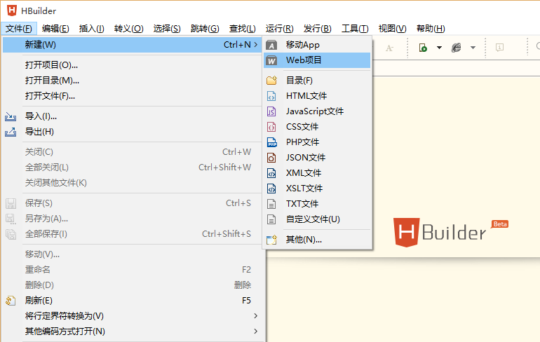
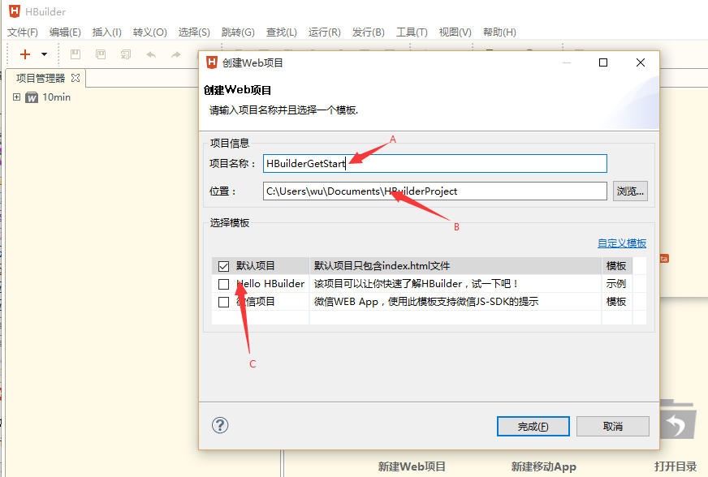
Como se muestra arriba, en el campo A escribe el nombre del nuevo proyecto; en el campo B escribe (o selecciona) la ruta de guardado del proyecto (HBuilder recordará esta ruta y la usará por defecto la próxima vez); en el campo C puedes elegir la plantilla a usar (puedes hacer clic en Plantilla personalizada y consultar el archivo readme.txt de la carpeta abierta para personalizarla).
Crear una página HTML con HBuilder
En el explorador de proyectos, selecciona el proyecto recién creado, haz clic sucesivamente en Archivo → Nuevo → Elegir archivo HTML (puedes presionar Ctrl+N, W para crearlo rápidamente; en macOS usa Command+N y luego haz clic con el botón izquierdo en Archivo HTML) y elige la plantilla de archivo en blanco, como se muestra a continuación.
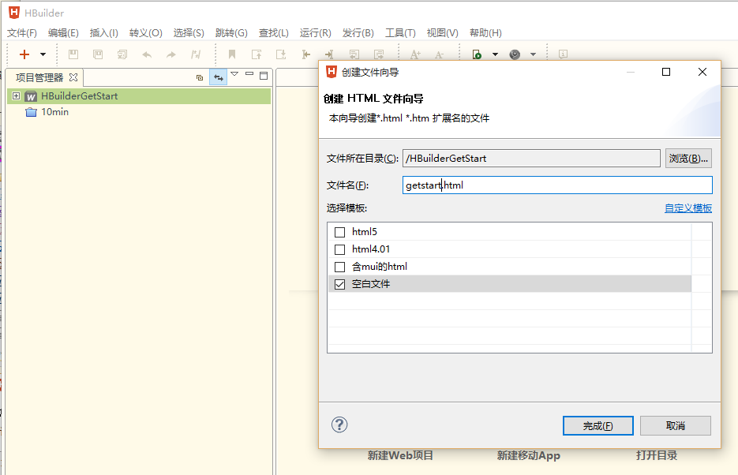
Usa la función de edición con vista previa en vivo de HBuilder para ver el efecto de la programación
En Windows presiona Ctrl+P (en macOS, Command+P) para entrar en el modo de edición con vista previa en vivo. En este modo, si el archivo abierto actualmente es HTML, cada vez que guardes se actualizará automáticamente para mostrar el efecto de la página actual (si son archivos JS o CSS y tienen relación de referencia con la página abierta en la vista del navegador, también se actualizarán).
Los bloques de código de HBuilder reducen enormemente el trabajo de código repetitivo
En el archivo getstart.html abierto, escribe H, como se muestra a continuación.
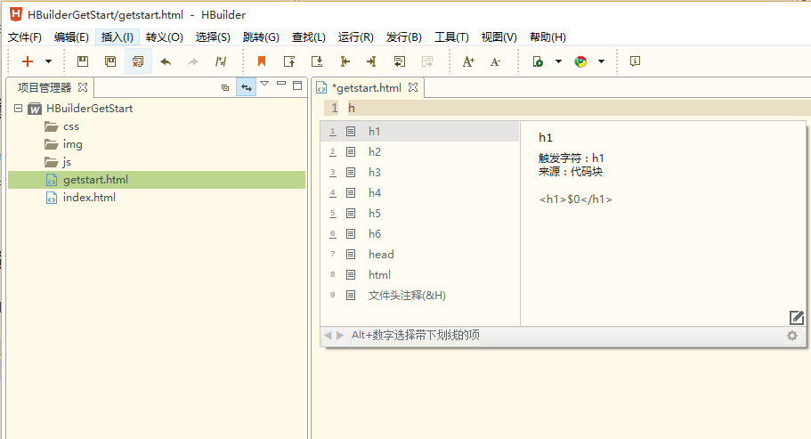
Luego presiona 8 y se generará automáticamente el código básico de HTML, como se muestra a continuación.
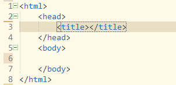
¿Qué es un bloque de código?
Un bloque de código es una combinación de código de uso frecuente. Por ejemplo, en JS, si escribes $ y pulsas Enter, se inserta automáticamente document.getElementById(id).
Para ver y editar bloques de código, puedes ir a Herramientas - Bloques de código personalizados y seleccionar el bloque correspondiente para verlo y editarlo. También puedes hacer clic en el icono de modificar en la esquina inferior derecha de los detalles en el asistente de código que activa el bloque de código para modificarlo y verlo.
Principio 1 de los caracteres de activación de bloques de código:Las letras iniciales de palabras consecutivas. Por ejemplo: dg activa document.getElementById(""); vari activa var i=0; dn activa display: none;
Principio 2 de los caracteres de activación de bloques de código:Para bloques HTML completos se suele usar el nombre de la etiqueta. Por ejemplo, script, style. Normalmente, basta con escribir como máximo 4 letras para encontrar el bloque de código deseado, sin necesidad de escribirlo completo. Por ejemplo, sc + Enter, st + Enter completan la inserción de las etiquetas script y style.
Principio 3 de los caracteres de activación de bloques de código:Para una misma etiqueta, si hay varios bloques de código de salida, se añade un sufijo al final. Por ejemplo, meta genera <meta name="" content=""/> pero metau genera <meta charset="UTF-8"/>; metag es similar.
Principio 4 de los caracteres de activación de bloques de código:Si la sintaxis original tiene más de 4 caracteres, para las sintaxis comunes se usa una abreviatura para activar la primera palabra. Por ejemplo, input button se abrevia como inbutton; de manera similar, intext es un cuadro de entrada.
Principio 5 de los caracteres de activación de bloques de código:Los bloques de código de palabras clave de JS consisten en añadir una letra repetida al final de la palabra clave. Por ejemplo, si escribes if directamente, aparece la palabra clave if, pero con iff + Enter aparece el bloque de código if. Otros casos similares son forr, withh, etc. Dado que la palabra function es larga, para acelerar la escritura se usa la abreviatura fun. Por ejemplo, funn genera el bloque de código function, mientras que funa y func generan respectivamente una función anónima y un closure.
Los atajos de teclado flexibles permiten mantener las manos en el teclado durante la programación
El efecto se muestra a continuación.
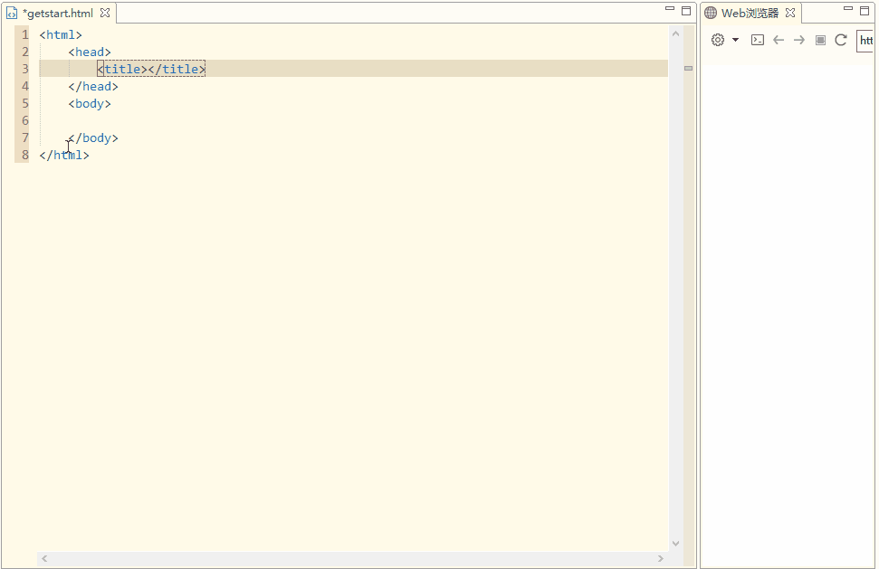
Después de crear la plantilla básica de HTML, el cursor se encuentra dentro de la etiqueta title. En este momento configuramos el título del HTML como hellohbuilder. Al terminar, usa Ctrl + Enter para insertar una línea vacía debajo de la línea actual y mover el cursor a la línea siguiente.
Aquí usamos el bloque de código sc para generar un bloque script y escribir código JS (escribe sc y pulsa Enter), como se muestra a continuación.
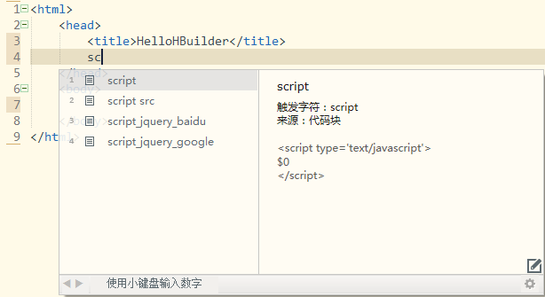
- Usa el bloque de código funn para escribir un método JS helloworld (escribe funn y pulsa Enter), como se muestra a continuación.
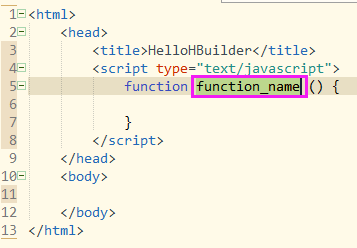
- En este momento, el nombre del método generado está seleccionado; solo tenemos que escribir directamente el nuevo nombre del método helloworld, como se muestra a continuación.
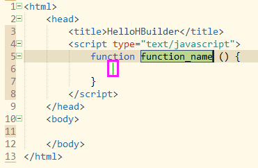
La línea vertical verde en la imagen anterior es la siguiente posición de edición especificada en el bloque de código. Al pulsar Enter, el cursor saltará directamente a la posición de la línea vertical.
Ahora presiona Flecha abajo, Flecha abajo, Ctrl + Enter, escribe style y pulsa Enter para generar el área de código CSS.
Define una clase CSS classA: escribe . c l a s s A {, pulsa Enter, escribe f o n t, pulsa Enter, Enter, Enter.
Luego presiona Alt + Flecha abajo, Alt + Flecha abajo para saltar a la siguiente área de edición.
Escribe sucesivamente < d i v (también puedes escribir <dv + Enter o <iv + Enter; el asistente de sintaxis puede averiguar la etiqueta que deseas generar mediante coincidencia aproximada), como se muestra a continuación.
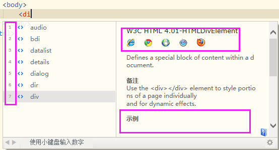
Como se muestra arriba, el asistente de código contiene números en el lado izquierdo; puedes usar estos números para seleccionar la entrada correspondiente. El lado derecho contiene datos de compatibilidad con navegadores y ejemplos.
Escribe i, Enter, d 1, Flecha derecha, Espacio, c, Enter, Enter.
Coloca el mouse sobre el atributo class classA de la etiqueta div, mantén presionada la tecla Alt y haz clic con el botón izquierdo; al hacer clic saltarás a la definición de classA.
Ctrl + Enter
div también se puede generar mediante bloques de código. Por ejemplo, escribe divc, Enter, Enter, Enter, luego escribe helloworld, como se muestra a continuación.
Flecha abajo, Enter
Usa la sintaxis de selectores CSS para desarrollar HTML y CSS rápidamente (compatible con Emmet)
Escribe div#page>div.logo+ul#navigation>li*2>a y pulsa Tab para generar el código, como se muestra a continuación.
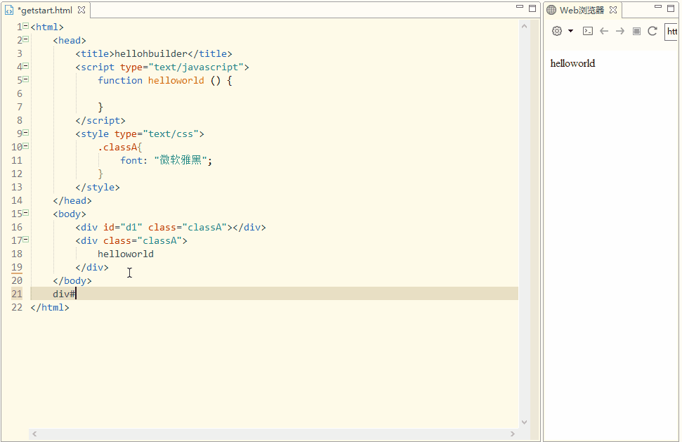
HBuilder integra la funcionalidad de Emmet; puedes usar la sintaxis de selectores CSS para desarrollar HTML y CSS rápidamente. Si deseas comprender Emmet en profundidad, dirígete a la información correspondiente.http://www.emmet.io/
El potente motor de análisis JS acelera enormemente el desarrollo en JS
Sugerencias de HTML y CSS en JS
JS sugiere los IDs de HTML
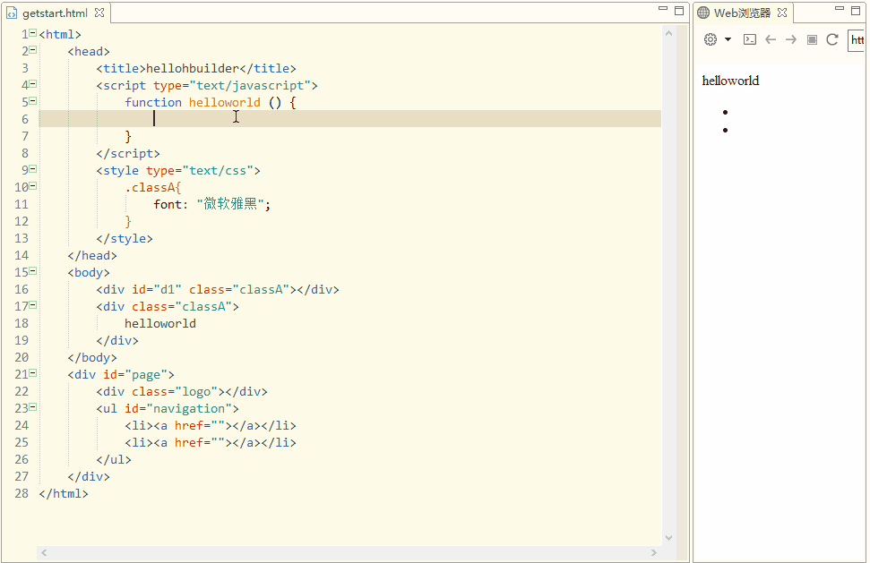
JS sugiere los nombres de etiqueta (tagname) de HTML
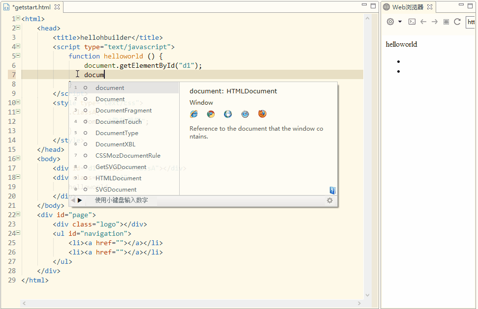
JS sugiere los nombres de clases CSS
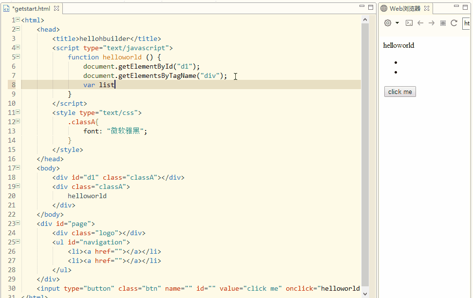
JS no solo puede obtener elementos HTML mediante ID, tagname y nombres de clase CSS, sino que también puede analizar con precisión el tipo de elemento y sugerir sus propiedades de forma exacta. Como se muestra arriba, puede sugerir list
Sugerencias de JSON en JS
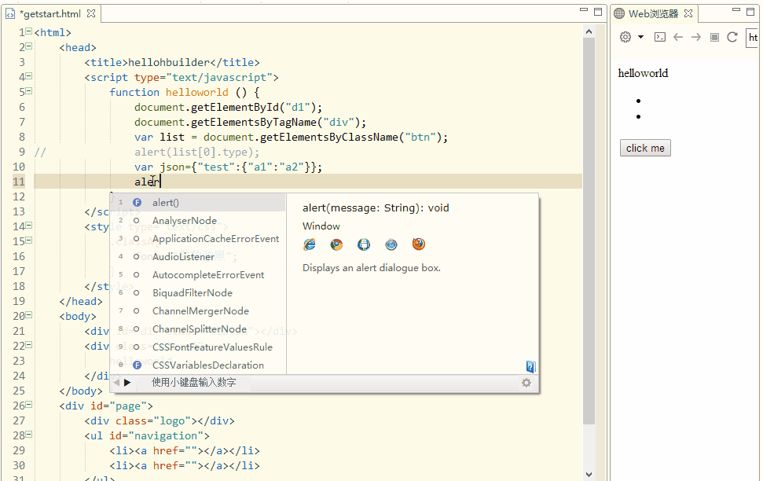
JS sugiere métodos personalizados del sistema
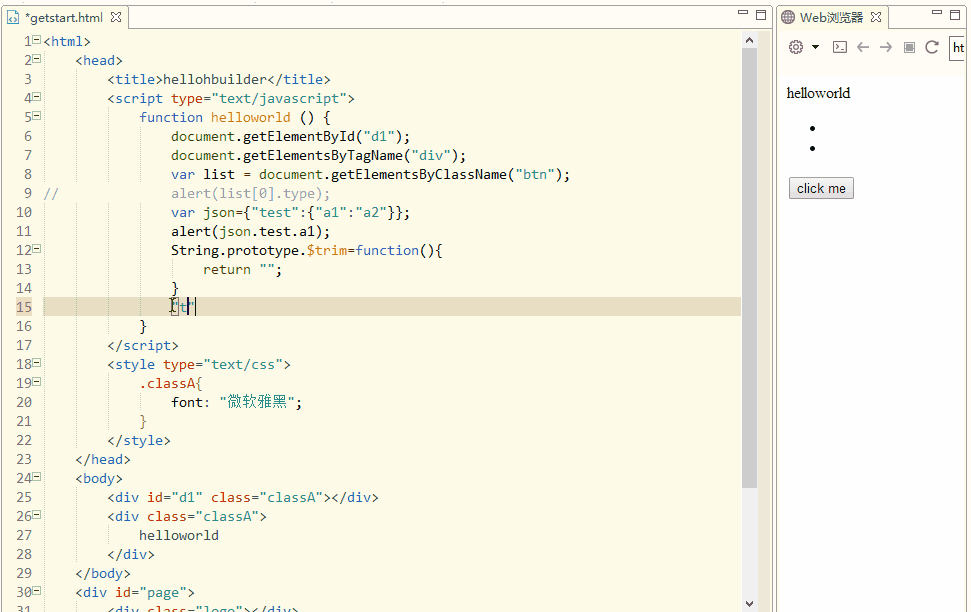
JS sugiere referencias a objetos y sus propiedades y métodos
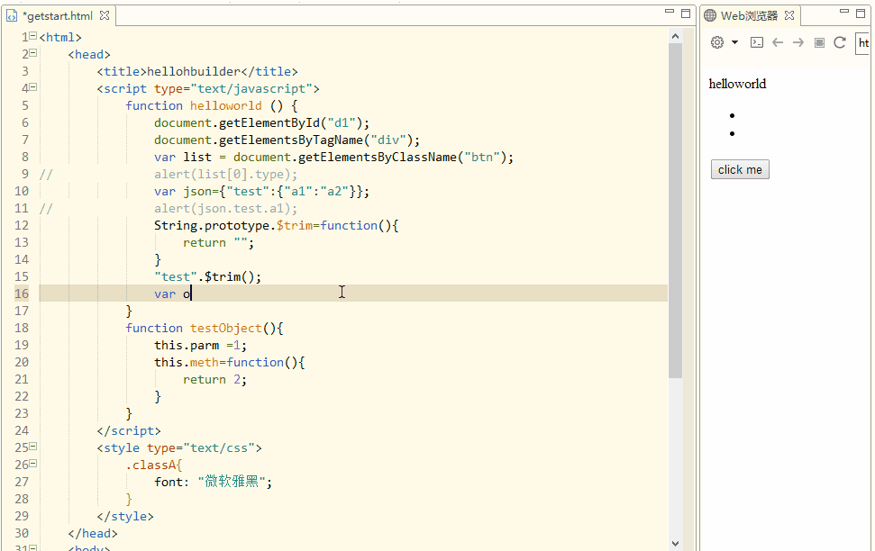
JS sugiere objetos de cierre (closures)
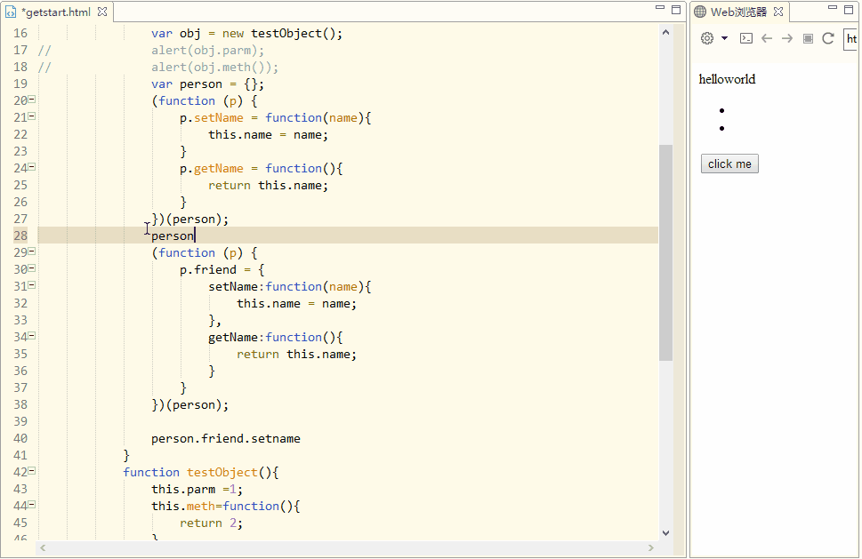
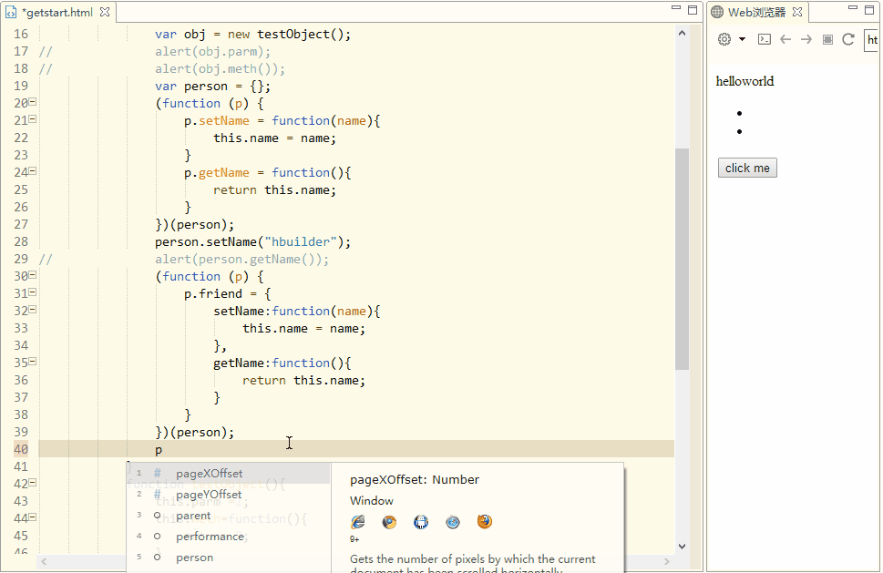
Saltar a la definición de clases, IDs y métodos JS
Mantén presionada la tecla Alt y haz clic con el botón izquierdo en el nombre del método, ID, clase CSS o archivo (enlaces, imágenes) referenciados; puedes saltar al lugar de la referencia. ¡También funciona con referencias entre archivos!
Saltar a la definición de métodos JS, como se muestra a continuación
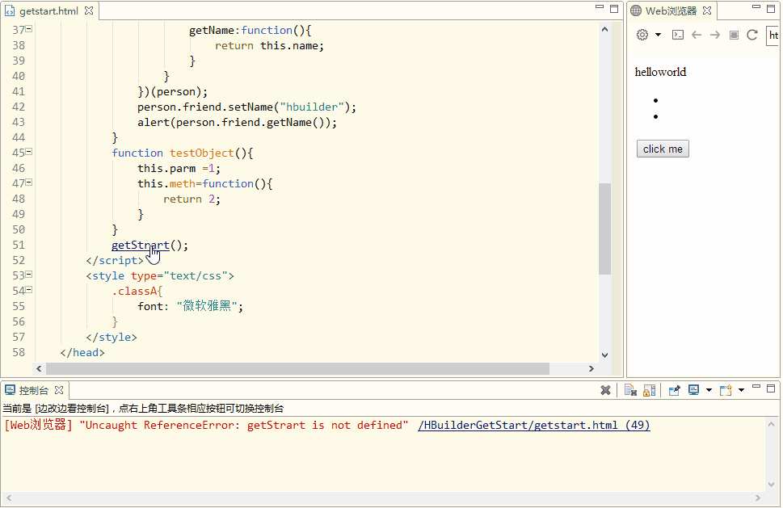
Saltar a la definición de clases CSS, como se muestra a continuación.
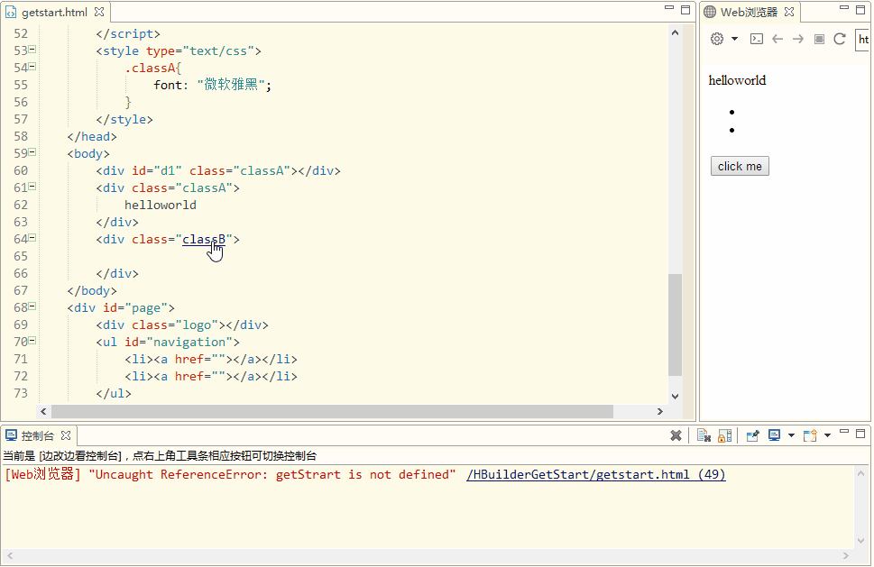
Saltar a la definición de ID, como se muestra a continuación.
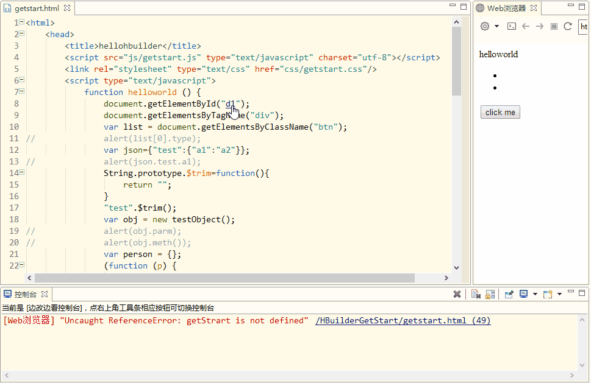
Saltar a archivos, como se muestra a continuación.
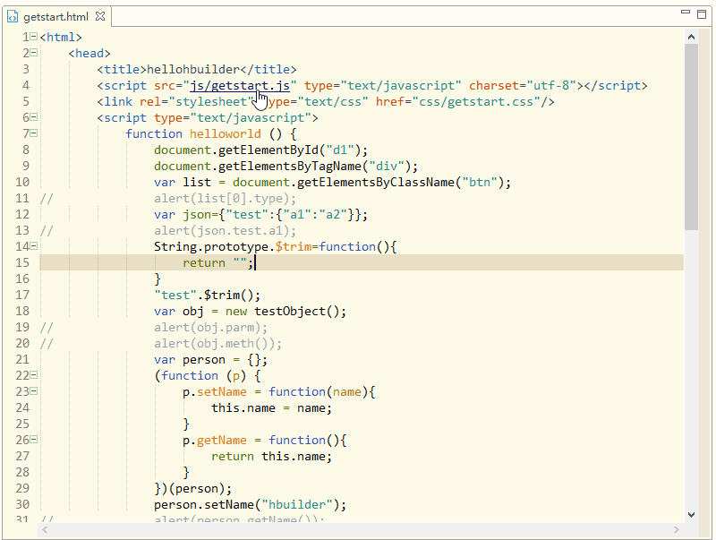
Más gemas ocultas
El asistente de salto, el asistente de selección, el asistente de escape y el asistente de atajos de teclado te permiten mantener las manos en el teclado.
Compatibilidad con HTML5+, depuración en dispositivos móviles reales, compilación en la nube, lo que facilita el desarrollo de aplicaciones multiplataforma para móviles.
Más funciones emocionantes: Refactorización | Esquema | Tareas | Historial de versiones | Servidor web integrado | Actualización en tiempo real | Gestión segura de proyectos | Envolver | Conversión de máscara | Corrección inteligente de errores | Plegado de código | Ir a definición | Formatear código | Codificación/descodificación de URL | Conversión de bases | Cierre automático.
¿Aún no es suficiente? Descargue plugins para potenciar más funciones; los expertos pueden incluso desarrollar plugins y compartirlos en beneficio de todos los desarrolladores.
Haz clic para compartir notas
<p style="font-size:14px;">¡Las notas deben ser una extensión del contenido de este artículo!</p><br> <p style="font-size:12px;"><a href="../tougao.html" target="_blank">Envío de artículos, haga clic aquí</a></p> <p style="font-size:14px;"><a href="./runoob-user-test-intro.html" target="_blank">Cómo obtener el código de invitación de registro</a></p> <h3 class="text-muted"><i class="fa fa-info-circle" aria-hidden="true"></i> Antes de compartir notas debe <a href=".." class="runoob-pop">iniciar sesión</a>.</h3> <p><a href="./runoob-user-test-intro.html" target="_blank">Cómo obtener el código de invitación de registro</a></p>